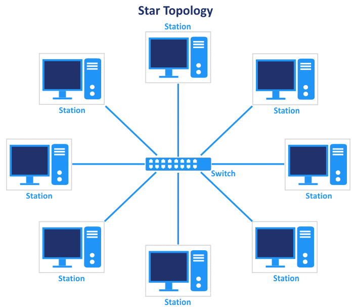
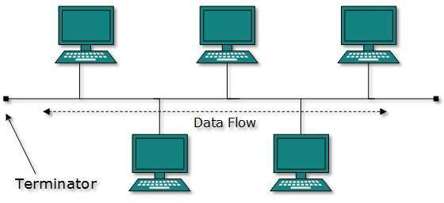
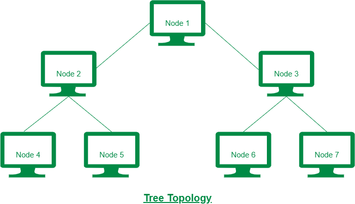
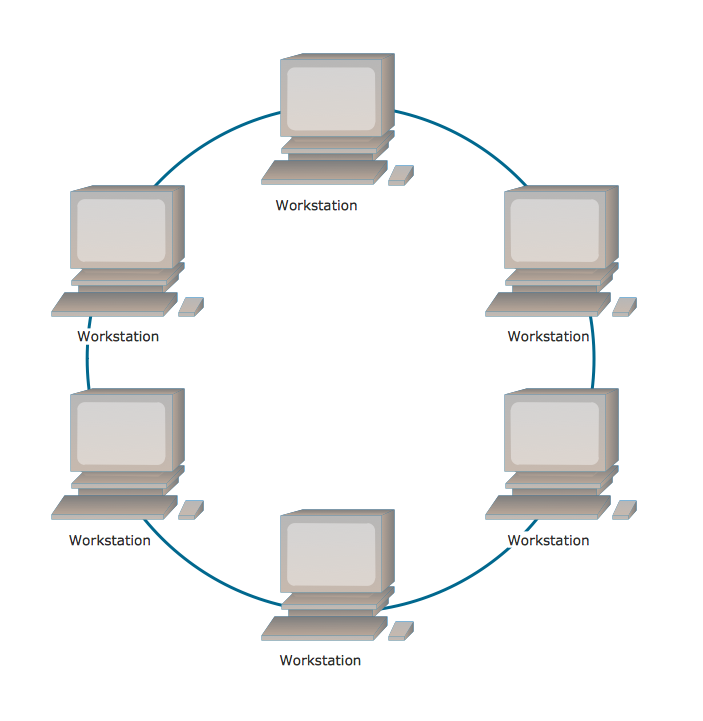
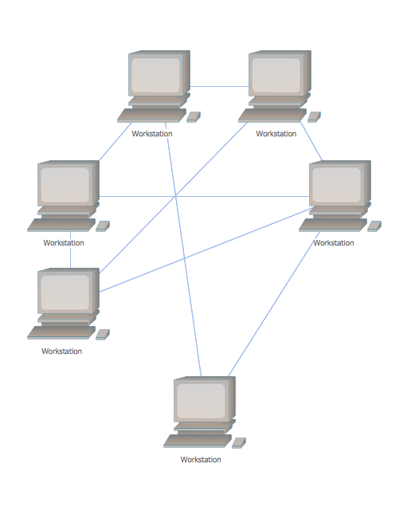
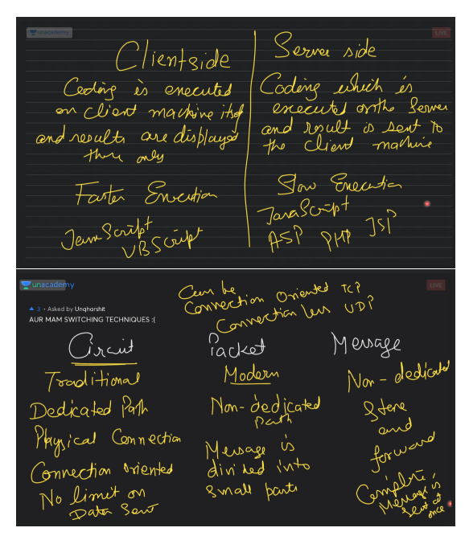
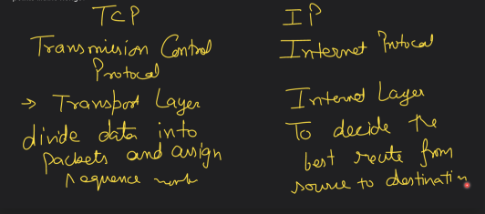
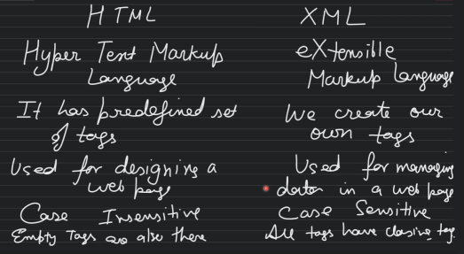

Computer Networks
A Collection of Computers connected with each other to share information and resources is called Computer Networks.Advnatages :
- Sharing of Data/Files
- Resource Sharing (printer,scanner,etc.)
- Access to Remote Information (Google)
- Communication (e-mails, video calls, chats, etc.)
Disadvnatages :
- Expensive due to Equipments and skilled Labours
- Dependence of/on Network Resources
- One device can create problems for the whole network
History of Computer Networks
ARPANET
ARPANET(Advanced Research Project Agency Network) was deeloped in 1969 for U.S. Defence Academy that used TCP/IP protocol for operations.NSFNET
NSFNET (national Science Foundation Network was founded by V.S. National Science foundation which linked five supercomputer sites across the country in 1980s.Top🔝🔝
Types of Computer Networks
On the basis of physical/geographical distance, computer networks can be classified as follows :- PAN
- LAN
- MAN
- WAN
- Internet
- PAN (Personal Area Network)
- PAN is established when two or more devices are connected to share some data within the range of 10m. It can be wired (using data cables) and wireless (using bluetooth). These networks are usually crated on personal level for exchange of data like images, videos, notes, etc.
- LAN (Local Area Network)
- LAN is established when a number of computers or other devices are connected to share data and resources for professional purposes within the range of 1km. Computers can be connected within a building or few adjacent/nearby buildings. Its is usually wired but can be implemented using wireless transmission media as well. Networks established in schools/colleges/local offices are examples of LAN.
- MAN (Metropolitan Area Network)
- MAN is a network established within a city. It ranges from 1-10km. Computers connected of different offices within the same city is an example of MAN. These networks can be wired or wireless. Ex : Cable TV Network, Food Restaurants within the city.
- WAN (Wide Area Network)
- WAN connects computers, devices and other networks together in a large span of area. WAN is usually Wireless. When a network is formed in area more than 10km or beyond the area of a city, it is termed as WAN. A WAN can be owned by an individual company or it can be Public Network.
- Internet
- It is the widest network of all. It connects multiple computers & networks to share data and communicate with each other.
Top🔝🔝
Transmission Medias
- Guided Media also known as Bounded Transmission Media. Signals are transmitted in a narrow pathway using physical links. Features :
- High Speed
- Secure
- Used for Shorter Distances
- Twisted Pair Cable
- CAT-3
- CAT-5
- Coaxial Cable
- Fibre Optics Cable
- Unguided Media also known as Unbounded Transmission Media. No physical medium is required for the transmission of electromagnetic signals. Features :
- Signals are Broadcastd through air
- less Secure
- Used for larger Distances
- Infrared
- Microwave
- Radiowave
- Satellite
A.) Twisted Pair Cable
It consists of 2 separately insulated conducted wires wound about each other. Twisted Pair Cable is of two types :
- Unshielded Twisted Pair (UTP)
- Advantages :
- least expensive
- easy to install
- high-speed capacity
- Disadvantages :
- lower capacity and performance
- short distance transmission
- Shielded Twisted Pair (STP)
- Advantages :
- better performance at a higher data rate in comparison to UTP
- eliminates crosstalk
- comparatively faster
- Disadvantages :
- comparatively difficult to install
- more expensive
- bulky
B.) Coaxial Cable
- Advantages
- High Bandwidth
- Easy to install & expand
- Inexpensive
- Disadvantages
- Single cable failure can disturb the entire network
C.) Optical Fibre Cable
- Advantages
- Increased Capacity & Bandwidth
- Light Weight
- Less Signal Attention
- Resistance to Corrosive Materials
- Disadvantages
- Difficult to Install & Maintain
- High Cost
- Fragile
A.) Radiowave
- Omnidirectional (goes in every direction)
- Free of Cost
- Data can be Stealed
- Signals are losed easily so, Transmitters are required
- Ex : FM ( Frequency Modulation)
B.) Microwave
- Unidirectional (one way)
- Paid Network
- Height of 40-50ft
- Spaced at-least 20-30 miles apart
- Ex : Cell Phones
C.) Satellite
- Best Unguided Media
- Expensive
- Ex : Tata Sky, Airtel
D.) Infrared
- can't pass through any hard obstacles
- used in TV Remotes
Top🔝🔝
Network Devices
- NIC stands for Network Interface Card. It is a chip/device used to connect a computer to a network through RJ-45 connector.
- MAC Address
- The NIC manufacturer assigns a unique physical address to each NIC card, this physical address is known as Media Access Control / MAC Address.
- Each MAC Address is unique for each network card.
- A MAC Address is a 6-byte address stored in hexadecimal digits with each byte separated by a colon(:).
- Ex - 12:AD:01:6C:7A:47
- Modem stands for modulator demodulator. Modulation means converting digital signals to analog and demodulation means converting analog signals to digital.
- Repeater used to regenerate the signals to maintain the original frequency.
- Router device used to connect multiple network and is responsible to find the shortest path from source to destination.
- Hub device used to connect multiple computers together in a network. It is a Broadcast Device.
- Switch also known as smart/intelligent hub. It's a device used to segment networks into different sub-networks called LAN segments.
- Bridge a device used to connect two LANs together. It can handle networks that follow same protocols.
- Gateway a device used to connect two dissimilar networks (MANs)
- Proxy Server
- a machine that is not actually a server but acts as a server.
- Firewall
- a system designed to prevent unauthorized access to/from a private network.
- Wi-fi Card (Wireless Fidelity) a Wi-Fi card is either an internal or external Local Area Network adapter with a built-in wireless radio and antenna.
Top🔝🔝
Protocols
- HTTP
- Hyper Text Transfer Protocol is used to tranfer one computer to another over internet.
- HTTPS
- Hyper Text Transfer Protocol Secure is the secured version of HTTP.
- FTP
- File Transfer Protocol is used to upload/download/send/ a file from internet.
- SMTP
- Simple Mail Transfer Protocol is used to send e-mails across the internet.
- VoIP
- enables voice communication over internet.
- POP3
- a standard mail protocol, that defines the rules about receiving e-mails. It works on Port 110 & Port 995 by default.
- PPP (Point to Point Protocol/ Peer to Peer Protocol
- used to connect two computers for shring data.
- Telnet
- used for Remote Login (a technology that allow you to sit at your computer, and connect to amother one's computer with their permission).Ex : TeamViewer, Anydesk, Zoom, etc.
- UseNet
- mostly used by news channels.
- CDMA
- Code Division Multiple Access.
- GSM
- Global System for Mobile Communication.
- SSL
- Secure Sockets Layer.
- IMAP
- Internet Mesaage Access Protocol.
- TCP (Transmission Control Protocol)
- connection oriented, devides the message in parts along with address & routes.
- UDP (User Datagram Protocol)
- connection less, divides message in parts with address only.
- IP (Internet Protocol)
- unique address assigned to every computer to the internet.
- Ex : 193.183.222.003
- 001.203.149.088
Top🔝🔝
Network Topoligies
it refers to the way in which the nodes/computers are interconnected in a network.
STAR
BUS
TREE
RING
MESH
COMPLETE
Star Topology
- Advantages :
- fast data transmission
- fault diagnosis is easy
- no collision due to centralized network connection
- Disadvantages :
- expensive due to long cable length
- central node dependency (i.e., if central node fails, entire network will fail)
Bus/Linear Topology
Data is broadcasted in this topology. Protocol used in this is : CSMA/CD (Carrier Sense Multiple Access Collision Detection).
- Advantages :
- easy to add computers
- short cable length required
- if one computer is not working it will not affect others
- Disadvantages :
- if the main cable is affected, the whole network will fail
- fault diagnosis is difficult
Tree Topology
It is the variation of bus and star topology.
- Advantages :
- can be used in universities where each unit works separately
- fault diagnosis is easy
- Disadvantages :
- maintainance cost is high
- if central Hub fails, it will affect the entire network
Ring Topology
- Advantages :
- lesser cable required
- limitless computers can be added
- Disadvantages :
- if any computer stops working, data transmission will not be possible
- fault diagnosis is not easy
Mesh Topology
Every computer must be connected with atleast two other computers.
- Advantages :
- if one computer is not working, it will not affect the entire network
- one computer can send information to two or more nodes simultaneously
- Disadvantages :
- high cable connection cost
Complete Topology

- Advantages :
- it can manage high traffic
- adding new device would not affect the whole network
- easy to add new device
- fastest data transmission
- Disadvantages :
- complex structure
- costly among all
- challenging maintainance
- more power consumption
Top🔝🔝
WEB SERVICES
- Client
- it is the machine where website is being viewed
- Server
- where the actual website is stored
- Website
- collection of webpages
- Webpage
- page designed in HTML to show text, images, forms, animations, audio/video, etc.
- Homepage
- first page of the website which is displayed using the domain name
- Domain Name
- www.alcoders.co.in
- URL
- Stands for Uniform Resource Locator. Ex - https://www.youtube.com
- ISP
- Internet Service Provider
- DNS
- Domain Name Server
- Domain NAme System
- Cookies
- temporary files created on client machine to store user preferences & autofill data
- Web Hosting
- uploading your website on internet with a registered domain name
- Web Browsers
- it is a software application used to open websites or to browse web pages.
- Ex : Chrome, Safari, Mozzila Firefox, MS Edge, Brave, Opera, etc.
- Web Servers
- it is a software that stores websites
- Ex : Glassfish, TOmcat, Apache, Amazon Web Service(AWS), Internet Information System(IIS), Azure, etc. Websites are of two types :
- Static
- once uploaded will not change
- Dynamic
- keeps on changing as per user's input
- Antivirus
- utility software which protects a computer from viruses
- VIRUS
- Vital Information Resources Under Seize
- Firewall
- cobination of hardware & software used to protect a computer/network from any kind of unauthorized access
i)Static ii)Dynamic
Top🔝🔝
SWITCHING TECHNIQUES
Circuit Switching Packet Switching Message Switching
Circuit Switching
A connection has to be established, data has to be transmitted & then the connection is released. There is no upper limit on the size of the data. Ex : landline phone calls.Packet Switching
No prior connection is there before sending the data. Packet Switching is also knows as store and forward technique. Ex : e-mails, SMS, etc.Message Switching
In this technique, a big message is divided into small chunks called packets. It has the best feature of circuit and message switching. It is of two types :- a.) Connection Oriented
- data is divided into small packets and each packet is alloted with their destination as well as the path. It is based on Transmission Control Protocol (TCP).
- b.) Connection Less
- data is divided into small packets along with their destination only. It is based on User Datagram Protocol (UDP).
Top🔝🔝
DIFFERENCES BY ANJALI LUTHRA MA'AM

